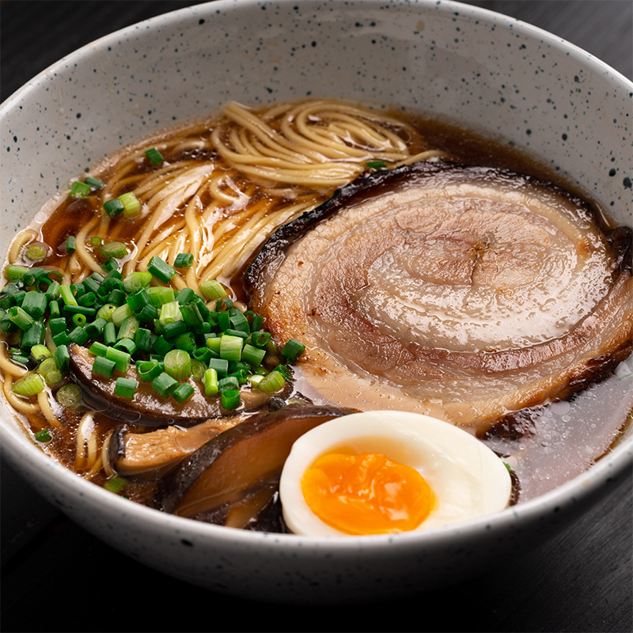

Marion's Shoyu Ramen

Description
Love noodle soup? Then you’ll want my recipe for a flavourful, restaurant-style homemade Japanese shoyu ramen!
This delightful chicken ramen soup broth is so jam-packed with umami goodness that you’ll want the whole pot to yourself.
I like to serve it with my homemade chashu pork belly, but you can add any protein of your choice. For a clear broth,
be sure to use a gentle simmer and scoop off any froth throughout the cooking.
Ingredients
- 2kg(4.4 lbs) Chicken Wings
- 2 Carrots (Cut into small pieces)
- 2 8-inch pieces of Kombu
- 6 Dried Shiitake Mushrooms
- 6 Spring Onions
- 1 Head of Garlic
- 1.57 inch Piece of Ginger
- 1/4 cup Soy Sauce
- Cooked Ramen Noodles to serve
- Chashu Pork, to serve (optional)
- Boiled Eggs, to serve
- 12 cups of Water
Tare(seasoning sauce)
- 1/4 Cup Soy Sauce
- 2 Tbsp Mirin
Steps
- Preheat the oven to 390°F.
-
Cut the chicken wings through their joints into smaller pieces. Spread the wings and carrots out in a large roasting tin and
cook for 45-60 minutes in the oven or until golden brown.
-
Transfer the roasting tin to your stovetop. Turn the heat to high and when the roasting juices in the tin start to bubble,
add in 2 cups of water. Use a wooden spoon to scrape up all the browned bits from the bottom of the pan. Then transfer all
the chicken, carrots, and the liquid into a large stock pot.
-
Place the stock pot over a high heat and add kombu, shiitake, 6 spring onions, garlic, ginger and soy sauce. Top up with 10
cups of water. Bring the stock to a simmer then reduce the heat to low and simmer gently for 3 hours, skimming the surface
every so often.
-
In the meantime, make the tare by mixing the ingredients in a small bowl.
-
Remove and reserve the shiitake mushrooms. Remove and discard the chicken and aromatics. Strain the broth through a fine mesh
sieve. Pour the broth into a clean saucepan. Taste and season with the tare according your taste.